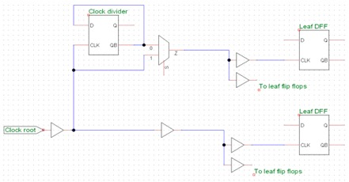

As shown in the schematic, we have some clock divider that divide root clock by half. While in scan mode, these flip-flops will be bypassed and treated as normal flip-flop that need to be inserted into the scan chain along with leaf flip-flops. But due to the nature of clock tree, clock divider will be in the upper stream and will have a much smaller clock insertion delay. Then it will cause large hold time violation from clock generator flip-flops to normal leaf flip-flops, and these violations cannot be fixed easily.
One solution is to ignore these FF’s in clock generator and sacrifise minor percentage of coverage. Because normally there are not much logic before or after these FF’s that is not in scan clock tree.
Another solution is insert these FF’s at the end of normal scan chains.